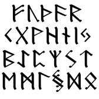
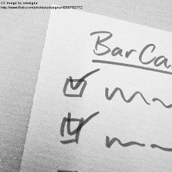

Check
Checks if an input conforms a Grammar or an Alphabet. Returns a boolean value.

Guess
Given an input and a repository with grammar and alphabets, it checks the input against every available definition, returning a list of valid grammars
What's the pydsl approach?
Pydsl includes a grammar and an alphabet repository to test against

Parser
Receives an input and generates an expanded tree known as a parse tree

Validate
Given an input that doesn't belong to a grammar, reports what needs to be fixed in the input to belong to that grammar
What's the pydsl approach?
It uses the expended definition of the input through Parsers

Translator
Translates an input to an output
Encoding conversion
In pydsl, encodings are described as alphabets
Diff
Shows the difference between two inputs that belong to the same alphabet